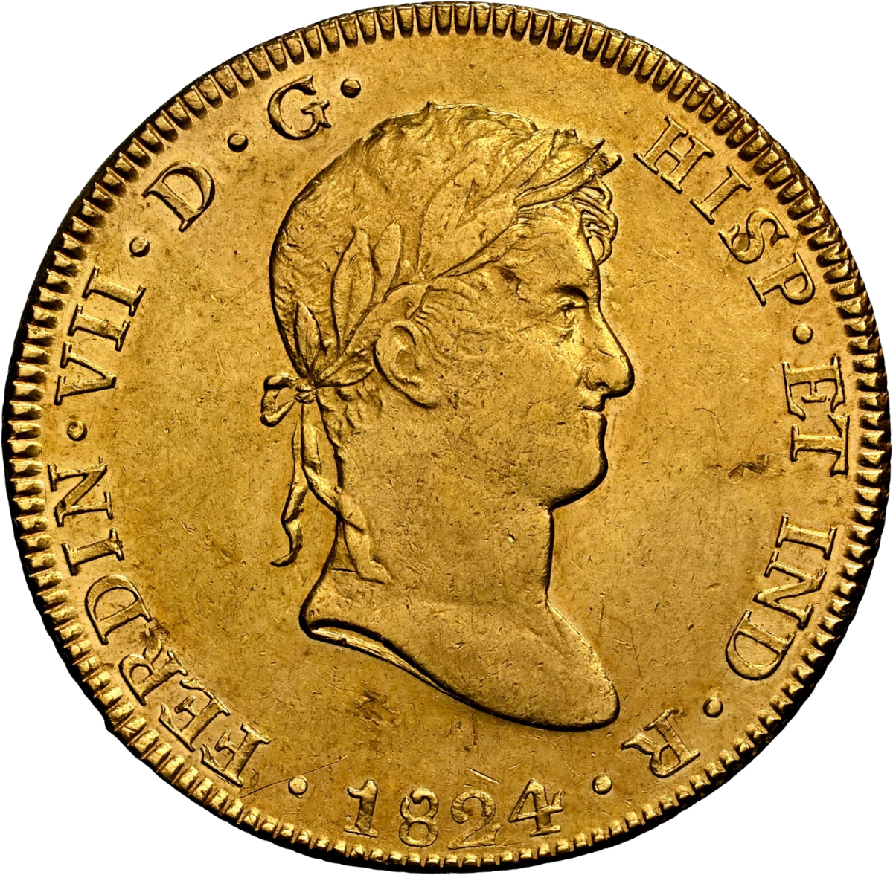
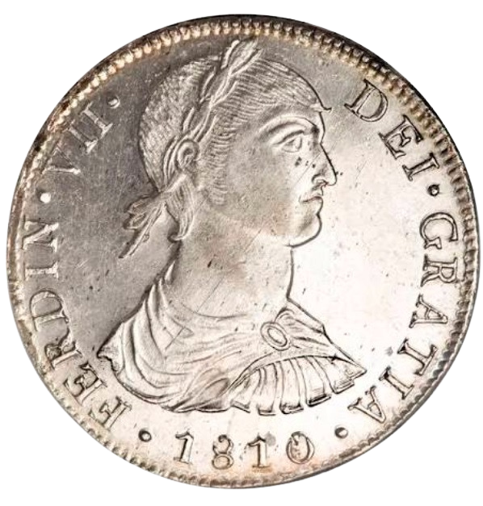

<!-- Conversor de Pasta a Monedas (Pragmáticas) -->
<div class="macuquina-floating-bar pasta-moneda-floating-bar">
  <!-- Botón A: Oro Pragmática 1772-1786 -->
  <button
    type="button"
    class="macuquina-icon-btn"
    title="Oro Pragmática 1772-1786"
  >
    
  </button>

  <!-- Botón B: Oro Pragmática 1786 -->
  <button type="button" class="macuquina-icon-btn" title="Oro Pragmática 1786">
    
  </button>

  <!-- Botón C: Plata Pragmática 1772 (Corregido comilla y tilde) -->
  <button
    type="button"
    class="macuquina-icon-btn"
    title="Plata Pragmática 1772"
  >
    
  </button>
</div>
